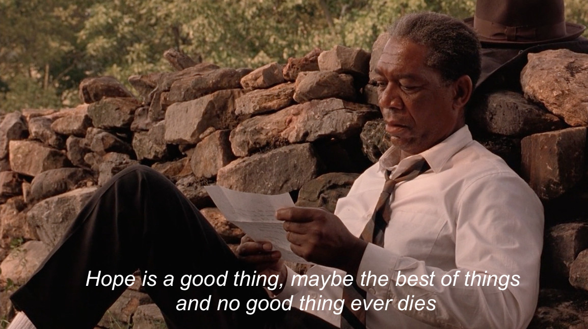
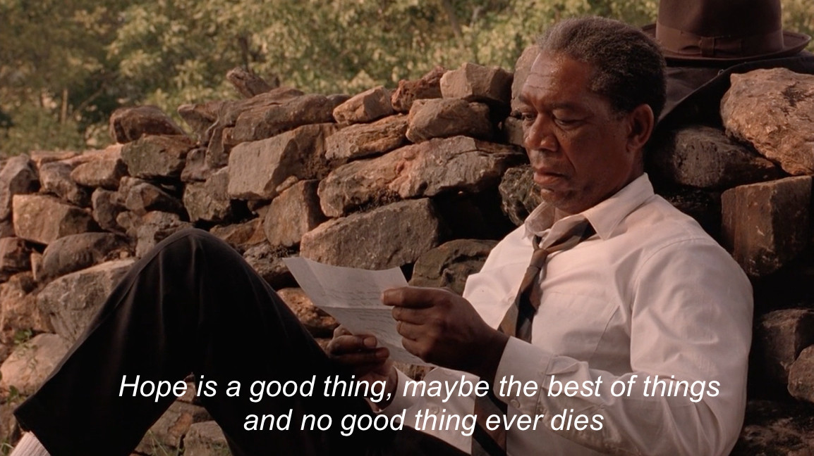

Here are my favorite American films.
Interstellar


In my opinion, Interstellar is the greatest film by director Nolan. It is also my favorite movie. I've watched it more than 5 times!
The part when they had to enter the black hole was so shocking. And how humanity is revealed as the story goes.
Avengers


Who doesn't like superhero movies such as Avengers? It is a great experience watching these kind of movies in the movie theater.
I started to watch the Avengers series in 2012. It's already been 10 years!
The Shawshank Redemption
 



Award winning filims such as The Shawshank Redemption will open your mind. Shawshank has showed his tenacity, wise, and belief in the prison.
Many movie platform put this movie as the greatest of all time.